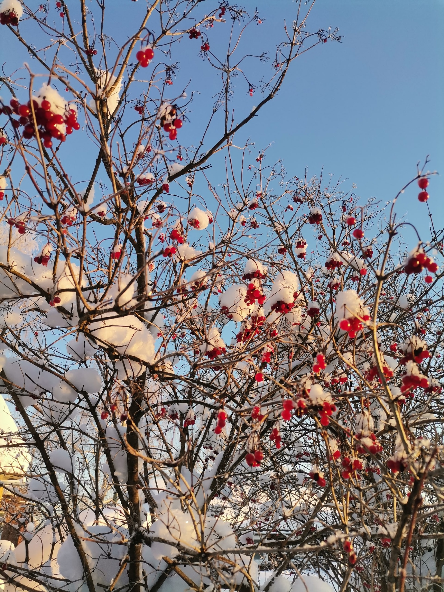

Зима. Почему ее так любят и одновременно избегают.
Обычно зиму принято ругать.
Мол, как зима, так извечные простудные заболевания, грипп и прочие напасти.⠀⠀⠀⠀⠀⠀⠀⠀
Одежда зимняя стоит огромные деньги. Везде скользко.
На машине, чуть горка, уже буксуешь.
А пешком, так и вовсе можно ноги сломать, если упадёшь.
Но, на самом деле, плюсов у зимы ничуть не меньше, чем минусов

1. Чистый воздух
Живя в черте большого города, любой мог удостовериться в том,
что зимой дышится намного легче и приятнее, чем летом.
Почему так происходит? Да потому что в зимнем воздухе
чуть ли не в полтора раза повышено содержание кислорода,
а снег превосходно впитывает в себя все вредные выхлопы.
2. Отступание стресса
Прогулки на морозе оказывают тонизирующий эффект
на нашу вегетативную нервную систему, что на порядок
снижает риск возникновения разного рода переживаний и активации
приступов паники, фобий и панических атак.
Всё это, вкупе с шумопоглощением, описанным в предыдущем разделе,
положительно влияет на психику людей.
3. Улучшение работы ЦНС
Никто не станет спорить с тем, что именно на морозе мыслится гораздо легче.
А всё потому, что уличный морозец способствует нормализации давления в крови,
улучшению циркуляции крови, что, в свою очередь, избавляет от
умственного перенапряжения.
Поэтому и мысли становятся чистыми, чёткими и незамутнёнными.

1. Холод
Как бы это не было очевидно, но главный минус зимы - это ее холод,
который заставляет мерзнуть всех, начиная от растений и зверей, до людей.
Сильные похолодания часто сопровождаются обморожениями и разными видами заболеваний.
Заморозки также являются причиной приведения в негодность разных приборов и устройств,
долго находящихся на открытом воздухе, как телефоны или аккумуляторы автомобилей.
2. Гололед
Гололедица – это лед или слой снега, утрамбованный до твердого состояния
и образующий скользкую поверхность.
Гололедица является причиной частых падений и травм пешеходов,
но что страшнее - ДТП на скользких участках дороги,
которые могут вызвать цепные реакции и стать большим аварийным участком.
Также он может являться причиной обрыва проводов
из-за тяжести льда, нависшего на них в купе с увеличением их ломкости
3. Экономические проблемы
Зима приносит с собой холод, от которого нужно как-то укрываться.
Все люди запасаются на зиму какими-либо припасами, повышается нагрузка
на электростанции и общая стоимость услуг отопления возрастает на глазах
В деревнях и селах эта проблема касается покупки дров на зиму в больших количествах
⠀⠀⠀⠀⠀⠀⠀⠀⠀⠀⠀⠀⠀
Оставить комментарий ッ